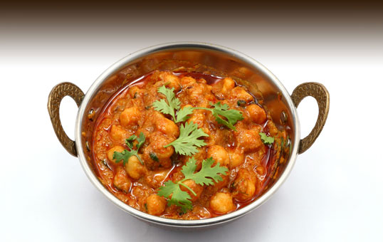

Khatta Chana:
Khatta channa is a North Indian Punjabi style chickpea preparation with choicest spices and ingredients. The kabuli chana or chole are boiled along with tea leaves tied in a muslin cloth and then cooked in a delicious onion-tomato and ginger-garlic paste based spicy gravy. Serve Punjabi chole with onion rings as garnishing with kulcha or rice.